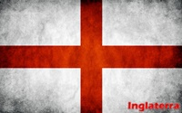
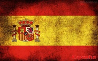
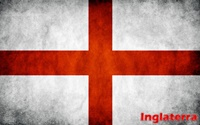
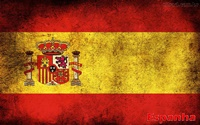

Sobre o Evento
A Copa ou Campeonato do Mundo FIFA de 2014 será a vigésima edição do evento e terá como país-anfitrião o Brasil. É a segunda vez que este torneio é realizado no país, depois da Copa do Mundo FIFA de 1950. A competição será disputada entre 12 de junho e 13 de julho e ocorrerá pela quinta vez na América do Sul, a primeira após 36 anos já que a Argentina acolheu o evento em 1978.
O Brasil foi a última sede de Copa do Mundo escolhida através da política de rodízio de continentes implementada pela FIFA, iniciado a partir da escolha da Copa do Mundo FIFA de 2010, na África do Sul.
As seleções nacionais de 31 países avançaram através de competições de qualificação, que começaram em junho de 2011, para participar com o país anfitrião, o Brasil, no torneio final. Um total de 64 jogos devem ser jogados em doze cidades de todo o Brasil em estádios novos ou reconstruídos, sendo que o torneio começa com uma fase de grupos. Pela primeira vez em uma Copa do Mundo, os jogos vão usar tecnologia na linha do gol.
Com o país anfitrião, todas as equipes campeãs do mundo desde a primeira Copa do Mundo, em 1930 (Uruguai, Itália, Alemanha, Inglaterra, Argentina, França e Espanha) se qualificaram para esta competição. A Espanha é o atual campeão, tendo derrotado os Países Baixos por 1-0 na final da Copa do Mundo de 2010 para ganhar seu primeiro título mundial. As quatro Copas do Mundo anteriores sediadas pela América do Sul foram todas ganhas por seleções sul-americanas.
Candidatura
Em 3 de junho de 2003, a Confederação Sul-Americana de Futebol (CONMEBOL) havia anunciado que Argentina, Brasil e Colômbia se candidataram à sede do evento. Em 17 de março de 2006, as confederações da CONMEBOL votaram de forma unânime pela inscrição do Brasil como seu único candidato.
O presidente da FIFA, Joseph Blatter, disse em 4 de julho de 2006 que, nesse caso, a Copa do Mundo de 2014 provavelmente seria sediada no país. Em 28 de setembro do mesmo ano, ele se encontrou com o então presidente Lula e disse que queria que o país provasse sua capacidade antes de tomar uma decisão. O dia 7 de fevereiro de 2007 seria a data final para as inscrições, porém a FIFA antecipou o prazo, tendo este acabado em 18 de dezembro de 2006. No último dia para as inscrições, a Colômbia também se candidatou a sediar a Copa de 2014; mas Joseph Blatter não apoiou a candidatura do país, e assim a Colômbia acabou por desistir de sediar o evento.
Em 30 de outubro de 2007, a FIFA ratificou o Brasil como país-sede da Copa do Mundo de 2014.6 A escolha das cidades-sede ficou para o fim de 2008, mas acabou acontecendo em 31 de maio de 2009, nas Bahamas.
Eliminatórias
Trinta e duas seleções participarão da Copa, sendo que a brasileira não precisa disputar eliminatórias por ser a anfitriã. A distribuição das vagas pelas confederações continentais foi divulgada pelo Comitê Executivo da FIFA em março de 2011, sem alterações em relação à edição anterior. Assim continuaram treze vagas para a UEFA, cinco para a CAF, quatro para a CONMEBOL (sem incluir a vaga brasileira de anfitrião), quatro também para a AFC e três para a CONCACAF. Ademais, a repescagem intercontinental ocorreu entre uma seleção da AFC e da CONMEBOL e outra entre uma da CONCACAF e da OFC, que não possui vaga garantida direta ao mundial.
Sorteio
O sorteio de qualificação para a Copa de 2014 foi realizado no Rio de Janeiro na Marina da Glória em 30 de julho de 2011. O sorteio foi organizado pela Geo Eventos, criada pelas Organizações Globo e pelo Grupo RBS e que também cuidará do Fan Fest nas doze cidades-sedes, sob um contrato com a prefeitura carioca e o governo fluminense no valor de R$ 30 milhões, que segundo as estimativas custou 15 vezes mais que os sorteios da Copa do Mundo de 2010 (estimado em R$ 2 milhões) sendo tudo pago com dinheiro público. Como país anfitrião, o Brasil se qualifica automaticamente para o torneio.
Contou com a presença da presidente Dilma Rousseff, do presidente da FIFA, Joseph Blatter, do então presidente da CBF, Ricardo Teixeira, e de várias autoridades brasileiras e representes das diversas confederações internacionais. A cerimônia foi transmitida ao vivo para todo o mundo e teve como apresentadores o jornalista Tadeu Schmidt e a modelo e apresentadora Fernanda Lima.11 A estimativa dos organizadores é que 500 milhões de pessoas acompanharam o sorteio dos grupos das eliminatórias.
A cerimônia de sorteio das eliminatórias, ocorrida na cidade do Rio de Janeiro, definiu os grupos e confrontos das qualificações africana, europeia, asiática, oceânica e da CONCACAF.
- AFC: 43 times competiram por 4 vagas diretas para a Copa e 1 vaga para a repescagem intercontinental, que foi disputada em jogos de ida e volta contra o 5º colocado das eliminatórias sul-americanas;
- CAF: 52 times competiram por 5 vagas diretas para a Copa;
- CONCACAF: 35 times competiram por três vagas diretas para a Copa e 1 vaga para a repescagem intercontinental, que foi disputada em jogos de ida e volta contra o vencedor das eliminatórias da Oceania;
- CONMEBOL: 9 times disputaram 4 vagas diretas para a Copa e 1 vaga para a repescagem intercontinental, que foi disputada em jogos de ida e volta contra o 5º colocado das eliminatórias asiáticas. O Brasil estava automaticamente classificado por ser o país sede;
- OFC: 11 times competiram por uma vaga para a repescagem intercontinental, que foi disputada em jogos de ida e volta contra o 4º colocado das eliminatórias da CONCACAF;
- UEFA: 53 times competiram por 13 vagas diretas para a Copa.
 


